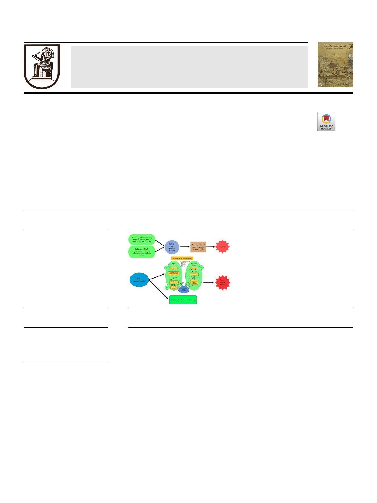

Journal of Advanced Research
Nicotinamide mononucleotide (NMN) as an anti-aging health product –
Promises and safety concerns
Harshani Nadeeshani a, Jinyao Li b, Tianlei Ying c, Baohong Zhang d, Jun Lu a,e,f,g,h,i,j,⇑
a School of Science, Faculty of Health and Environmental Sciences, Auckland University of Technology, Auckland 1010, New Zealand
b Xinjiang Key Laboratory of Biological Resources and Genetic Engineering, College of Life Science and Technology, Xinjiang University, Urumqi 830046, Xinjiang, China
c Key Laboratory of Medical Molecular Virology of MOE/MOH, Shanghai Medical College, Fudan University, 130 Dong An Road, Shanghai 200032, China
d School of Pharmacy, Shanghai Jiao Tong University, Shanghai, China
e School of Public Health and Interdisciplinary Studies, Faculty of Health and Environmental Sciences, Auckland University of Technology, Auckland 0627, New Zealand
f Institute of Biomedical Technology, Auckland University of Technology, Auckland 1010, New Zealand
g Maurice Wilkins Centre for Molecular Discovery, Auckland 1010, New Zealand
h College of Life Sciences and Oceanography, Shenzhen University, Shenzhen 518071, Guangdong Province, China
i College of Food Engineering and Nutrition Sciences, Shaanxi Normal University, Xi’an 710119, Shaanxi Province, China
j College of Food Science and Technology, Nanchang University, Nanchang 330031, Jiangxi Province, China
highlights
� Provides an overview of promises and
safety concerns of NMN as an anti-
aging product.
� Shows that NMN’s beneficial effects
supported by in vivo studies.
� Reveals that there is a lack of NMN’s
clinical safety and efficacy studies
� Suggests that proper clinical
investigations are urgently needed on
the effectiveness and safety of NMN
supplementation.
graphical abstract
article info
Article history:
Received 26 June 2021
Revised 2 August 2021
Accepted 4 August 2021
Available online 11 August 2021
Keywords:
Age-induced diseases
Anti-aging
Nicotinamide adenine dinucleotide
Nicotinamide mononucleotide
Supplement
abstract
Background: Elderly population has been progressively rising in the world, thus the demand for anti-
aging heath products to assure longevity as well as to ameliorate age-related complications is also on
the rise. Among various anti-aging health products, nicotinamide mononucleotide (NMN) has been gain-
ing attentions of the consumers and the scientific community.
Aim of review: This article intends to provide an overview on the current knowledge on promises and
safety concerns of NMN as an anti-aging health product.
Key scientific concepts of review: Nicotinamide adenine dinucleotide (NAD+) levels in the body deplete with
aging and it is associated with downregulation of energy production in mitochondria, oxidative stress,
DNA damage, cognitive impairment and inflammatory conditions. However, NMN, as the precursor of
NAD+, can slow down this process by elevating NAD+ levels in the body. A number of in vivo studies have
indicated affirmative results of therapeutic effects for various age-induced complications with NMN sup-
plementation. One preclinical and one clinical study have been conducted to investigate the safety con-
cerns of NMN administration while a few more human clinical trials are being conducted. As there is a
Peer review under responsibility of Cairo University.
⇑ Corresponding author at: Faculty of Health and Environmental Sciences, Auckland University of Technology, Auckland 0627, New Zealand.
2090-1232/Ó 2022 The Authors. Published by Elsevier B.V. on behalf of Cairo University.
This is an open access article under the CC BY-NC-ND license (http://creativecommons.org/licenses/by-nc-nd/4.0/).